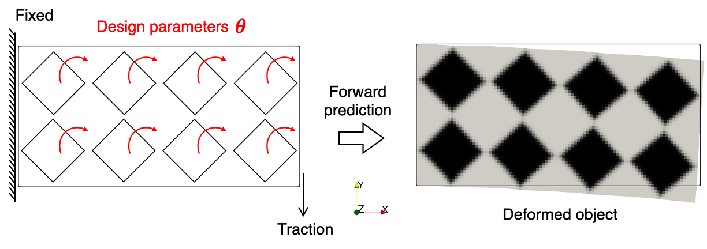

Shape optimization#
Problem definition#
In this example, an inverse problem is considered. The design parameter is a stiffness related term. The target of this tutorial is to use JAX-FEM to automatically find the gradient of the objective function with respect to this design variable.
A structural shape optimization problem will be illustrated here. A 2D cantilever beam contains eight square holes and is fixed at the left boundary (\(\Gamma_D\)). A shear force \(\boldsymbol{t}\) is applied near the bottom-right boundary (\(\Gamma_N\)). Manufacturing constraints permit the rotation of the eight holes, and the goal is to minimize the compliance of the beam under the applied shear force.
The design parameters \(\boldsymbol{\theta} = [\theta_1, \theta_2, \dots, \theta_M] \in \mathbb{R}^M\) with \(M=8\) represent the rotation angles of the eight holes. The mapping from \(\boldsymbol{\theta}\) to the density field \(\rho(\boldsymbol{x})\) commonly used in topology optimization uses a sigmoid function to ensure smoothness and differentiability. The material model follows the hyperelasticity formulation introduced in the previous example (traction force identification).
The static equilibrium for the hyperelastic material follows:
where \(\boldsymbol{P}\) is the first Piola–Kirchhoff stress tensor derived from a neo-Hookean strain energy density function \(W\).
Domain and boundary conditions#
\(\Omega \subset \mathbb{R}^2\) (2D cantilever beam with eight square holes)
\(\Gamma_D = \left\{ \boldsymbol{x} \in \partial \Omega \mid x_1 = 0 \right\}\) (Dirichlet boundary: fixed left side)
\(\Gamma_N \subset \left\{ \boldsymbol{x} \in \partial \Omega \mid x_1 = L \right\}\) (Neumann boundary: right side, near the bottom)
Weak form#
Find \(\boldsymbol{u}\) such that for all test functions \(\boldsymbol{v}\),
Optimization problem#
The inverse shape optimization subject to the PDE constraint:
which minimizes the compliance while rotating holes to alter the stiffness distribution.
Implementation#
For the implementation, we first import some necessary modules.
[45]:
import numpy as onp
import jax
import jax.numpy as np
import os
import meshio
# Import JAX-FEM specific modules.
from jax_fem.problem import Problem
from jax_fem.solver import ad_wrapper
from jax_fem.utils import save_sol
from jax_fem.generate_mesh import get_meshio_cell_type, Mesh, rectangle_mesh
Weak form#
The definition of the hyperelasticity problem is shown as follows. The code is similar to the one used in the example of traction force identification, but with different internal variables settings for a different optimizaiton problem. Here, we are using the rotation angles of the eight square holes in the structure as the design parameters.
To define the square holes with polar coordinates, we first define a sigmoid function to map the input variables into the range of the rotation angles.
[46]:
def scaled_sigmoid(x, lower_lim, upper_lim, p=0.1):
return lower_lim + (upper_lim - lower_lim)/((1. + np.exp(-x*p)))
With the rotation angles computed, we can use another sigmoid function to dig the rotated square holes in our design domain and return the density field. We use jax.vmap to vectorized the computation process in the dimension of number of holes.
[47]:
def pore_fn(x, pore_center, L0, beta):
beta = scaled_sigmoid(beta, -np.pi/4., np.pi/4., p=0.1)
porosity = 0.5
theta = np.arctan2(x[1] - pore_center[1], x[0] - pore_center[0])
r = np.sqrt(np.sum((x - pore_center)**2))
x_rel = r*np.cos(theta - beta)
y_rel = r*np.sin(theta - beta)
p = 200.
rho = 1./(1. + np.exp(-(np.abs(x_rel) + np.abs(y_rel) - 0.9*L0/2)*p))
return rho
pore_fn_vmap = jax.vmap(pore_fn, in_axes=(0, None, None, None))
In order to define the holes in the design domain, we prepare the necessary information of the central points and intergral points in all the cells with the method custom_init. These will be done when the problem instance be initiated. Noted that we have four additional input arguments in custom_init. We will descride how this can be realized in the following problem definition part.
[ ]:
class Elasticity(Problem):
def custom_init(self, Lx, Ly, nx, ny):
self.fe = self.fes[0]
# (num_cells, num_quads, dim)
physical_quad_points = self.fe.get_physical_quad_points()
L0 = Lx/nx
self.pore_center_list = []
self.quad_inds_list = []
for i in range(nx):
for j in range(ny):
pore_center = np.array([i*L0 + L0/2., j*L0 + L0/2.])
self.pore_center_list.append(pore_center)
# (num_selected_quad_points, 2)
quad_inds = np.argwhere((physical_quad_points[:, :, 0] >= i*L0) &
(physical_quad_points[:, :, 0] < (i + 1)*L0) &
(physical_quad_points[:, :, 1] >= j*L0) &
(physical_quad_points[:, :, 1] < (j + 1)*L0))
self.quad_inds_list.append(quad_inds)
self.L0 = L0
Then follows the definition of the weak form of a 2D plane strain hyperelasticity problem.
[ ]:
def get_tensor_map(self):
def psi(F_2d, rho):
# Plane strain
F = np.array([[F_2d[0, 0], F_2d[0, 1], 0.],
[F_2d[1, 0], F_2d[1, 1], 0.],
[0., 0., 1.]])
Emax = 1e6
Emin = 1e-3*Emax
E = Emin + (Emax - Emin)*rho
nu = 0.3
mu = E/(2.*(1. + nu))
kappa = E/(3.*(1. - 2.*nu))
J = np.linalg.det(F)
Jinv = J**(-2./3.)
I1 = np.trace(F.T @ F)
energy = (mu/2.)*(Jinv*I1 - 3.) + (kappa/2.) * (J - 1.)**2.
return energy
P_fn = jax.grad(psi)
def first_PK_stress(u_grad, rho):
I = np.eye(self.dim)
F = u_grad + I
P = P_fn(F, rho)
return P
return first_PK_stress
def get_surface_maps(self):
def surface_map(u, x):
return np.array([0, 1e4])
return [surface_map]
Here we comes to the most critical part of this tutorial about how to use some stiffness related terms as design parameters. In the method set_params, We input the rotation angles of the eight holes with the argument params and compute the density field based on it with the functions we formerly defined.
[ ]:
def set_params(self, params):
# Override base class method.
beta = params
rhos = np.ones((self.fe.num_cells, self.fe.num_quads))
for i in range(len(self.pore_center_list)):
quad_inds = self.quad_inds_list[i]
# (num_selected_quad_points, dim)
quad_points = self.physical_quad_points[quad_inds[:, 0], quad_inds[:, 1]]
pore_center = self.pore_center_list[i]
rho_vals = pore_fn_vmap(quad_points, pore_center, self.L0, beta[i])
rhos = rhos.at[quad_inds[:, 0], quad_inds[:, 1]].set(rho_vals)
self.internal_vars = [rhos]
Then follows the definition of our objective funtion, which is the compliance.
[ ]:
def compute_compliance(self, sol):
# Surface integral
boundary_inds = self.boundary_inds_list[0]
_, nanson_scale = self.fe.get_face_shape_grads(boundary_inds)
# (num_selected_faces, 1, num_nodes, vec) * # (num_selected_faces, num_face_quads, num_nodes, 1)
u_face = sol[self.fe.cells][boundary_inds[:, 0]][:, None, :, :] * self.fe.face_shape_vals[boundary_inds[:, 1]][:, :, :, None]
u_face = np.sum(u_face, axis=2) # (num_selected_faces, num_face_quads, vec)
# (num_selected_faces, num_face_quads, dim)
subset_quad_points = self.physical_surface_quad_points[0]
neumann_fn = self.get_surface_maps()[0]
traction = -jax.vmap(jax.vmap(neumann_fn))(u_face, subset_quad_points) # (num_selected_faces, num_face_quads, vec)
val = np.sum(traction * u_face * nanson_scale[:, :, None])
return val
Mesh#
Here we use the QUAD4 element to discretize the computational domain.
[49]:
ele_type = 'QUAD4'
cell_type = get_meshio_cell_type(ele_type)
Lx, Ly = 1., 0.5
nx, ny = 4, 2 # pore numbers along x-axis and y-axis
meshio_mesh = rectangle_mesh(Nx=100, Ny=50, domain_x=Lx, domain_y=Ly)
mesh = Mesh(meshio_mesh.points, meshio_mesh.cells_dict[cell_type])
Boundary conditions#
Then we can define the Dirichlet boundary condition and the location of the Neumann boundary condtion.
[50]:
def fixed_location(point):
return np.isclose(point[0], 0., atol=1e-5)
def load_location(point):
return np.logical_and(np.isclose(point[0], Lx, atol=1e-5), np.isclose(point[1], 0., atol=0.1*Ly + 1e-5))
def dirichlet_val(point):
return 0.
dirichlet_bc_info = [[fixed_location]*2, [0, 1], [dirichlet_val]*2]
location_fns = [load_location]
Problem#
We have completed all the preliminary preparations for the problem. So, we can proceed to create an instance of our problem. Here we are adding some additional_info, which are the sizes of our design domain and the pore numbers along the two spacial axis, to the instance.
[ ]:
problem = Elasticity(mesh, vec=2, dim=2, ele_type=ele_type, dirichlet_bc_info=dirichlet_bc_info,
location_fns=location_fns, additional_info=(Lx, Ly, nx, ny))
Solver#
Then we can wrap the forward problem with the function ad_wrapper, which enables efficient gradient computation for our inverse problem.
[52]:
fwd_pred = ad_wrapper(problem, solver_options={'umfpack_solver': {}}, adjoint_solver_options={'umfpack_solver': {}})
Then follows the definition of our objective funtion.
[53]:
def J(θ):
sol_list = fwd_pred(θ)
compliace = problem.compute_compliance(sol_list[0])
return compliace
To verify the accuracy of gradients computed using jax.grad, we employ the finite difference method.
[ ]:
θ_ini = np.array([1.]*nx*ny)
grad_value = jax.grad(J)(θ_ini)
h = 1e-3
θ_plus = θ_ini.at[0].set((1+h)*θ_ini[0])
θ_minus = θ_ini.at[0].set((1-h)*θ_ini[0])
dx_fd_0 = (J(θ_plus) - J(θ_minus))/(2*h*θ_ini[0])
print(f"\n grad_value[0] = {grad_value[0]}, dx_fd_0 = {dx_fd_0}")
The computation results are shown as follows:
[55]:
grad_value[0] = -0.036371384648253284, dx_fd_0 = -0.03637138590661948
Please refer to this link to download the source file.